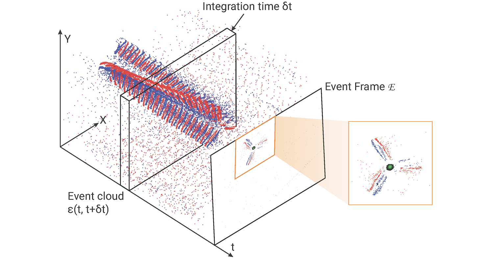
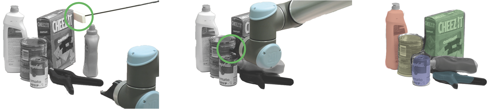
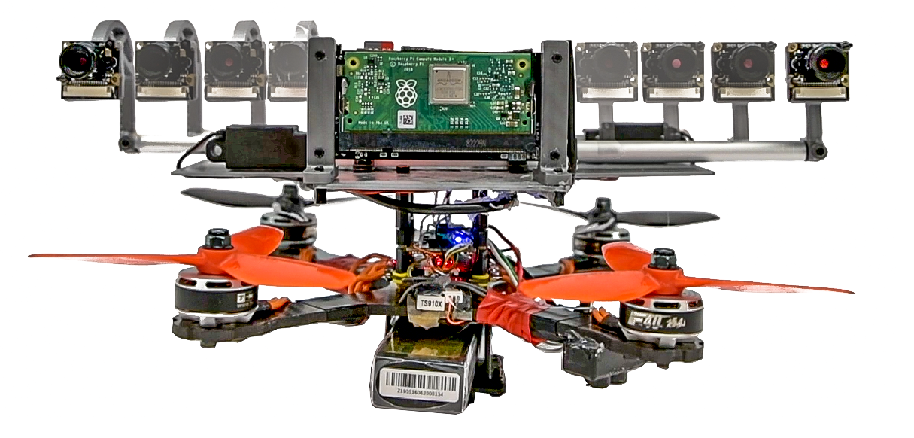

EVPropNet
The rapid rise of accessibility of unmanned aerial vehicles or drones pose a threat to general security and confidentiality. Most of the commercially available or custom-built drones are multi-rotors and are comprised of multiple propellers. Since these propellers rotate at a high-speed, they are generally the fastest moving parts of an image and cannot be directly "seen" by a classical camera without severe motion blur. We utilize a class of sensors that are particularly suitable for such scenarios called event cameras, which have a high temporal resolution, low-latency, and high dynamic range.
In this paper, we model the geometry of a propeller and use it to generate simulated events which are used to train a deep neural network called EVPropNet to detect propellers from the data of an event camera. EVPropNet directly transfers to the real world without any fine-tuning or retraining. We present two applications of our network: (a) tracking and following an unmarked drone and (b) landing on a near-hover drone. We successfully evaluate and demonstrate the proposed approach in many real-world experiments with different propeller shapes and sizes. Our network can detect propellers at a rate of 85.1% even when 60% of the propeller is occluded and can run at upto 35Hz on a 2W power budget. To our knowledge, this is the first deep learning-based solution for detecting propellers (to detect drones). Finally, our applications also show an impressive success rate of 92% and 90% for the tracking and landing tasks respectively.
References
RSS 2021
Nitin J. Sanket, Chahat Deep Singh, Chethan M. Parameshwara, Cornelia Fermuller, Guido C.H.E. de Croon, Yiannis Aloimonos, Robotics Science and Systems (RSS), 2021.

NudgeSeg
Recent advances in object segmentation have demonstrated that deep neural networks excel at object segmentation for specific classes in color and depth images. However, their performance is dictated by the number of classes and objects used for training, thereby hindering generalization to never seen objects or zero-shot samples. To exacerbate the problem further, object segmentation using image frames rely on recognition and pattern matching cues. Instead, we utilize the 'active' nature of a robot and their ability to 'interact' with the environment to induce additional geometric constraints for segmenting zero-shot samples. In this paper, we present the first framework to segment unknown objects in a cluttered scene by repeatedly 'nudging' at the objects and moving them to obtain additional motion cues at every step using only a monochrome monocular camera.We call our framework NudgeSeg. These motion cues are used to refine the segmentation masks. We successfully test our approach to segment novel objects in various cluttered scenes and provide an extensive study with image and motion segmentation methods. We show an impressive average detection rate of over 86% on zero-shot objects.
References
IROS 2021
Nitin J. Sanket*, Chahat Deep Singh*, Cornelia Fermuller, Yiannis Aloimonos, IEEE International Conference on Intelligent Robots and Systems (IROS), 2021.
* Equal Contribution

MorphEyes
Morphable design and depth-based visual control are two upcoming trends leading to advancements in the field of quadrotor autonomy. Stereo-cameras have struck the perfect balance of weight and accuracy of depth estimation but suffer from the problem of depth range being limited and dictated by the baseline chosen at design time. In this paper, we present a framework for quadrotor navigation based on a stereo camera system whose baseline can be adapted on-the-fly. We present a method to calibrate the system at a small number of discrete baselines and interpolate the parameters for the entire baseline range. We present an extensive theoretical analysis of calibration and synchronization errors. We show casethree different applications of such a system for quadrotor navigation: (a) flying through a forest, (b) flying through an unknown shaped/location static/dynamic gap, and (c) accurate 3D pose detection of an independently moving object. We show that our variable baseline system is more accurate and robust in all three scenarios. To our knowledge, this is the first work that applies the concept of morphable design to achieve a variable baseline stereo vision system on a quadrotor.
References
ICRA 2021
Nitin J. Sanket, Chahat Deep Singh, Varun Asthana, Cornelia Fermuller, Yiannis Aloimonos, IEEE International Conference on Robotics and Automation (ICRA) , 2021.

PRGFlow
Odometry on aerial robots has to be of low latency and high robustness whilst also respecting the Size, Weight, Area and Power (SWAP) constraints as demanded by the size of the robot. A combination of visual sensors coupled with Inertial Measurement Units (IMUs) has proven to be the best combination to obtain robust and low latency odometry on resource-constrained aerial robots. Recently, deep learning approaches for Visual Inertial fusion have gained momentum due to their high accuracy and robustness. However, the remarkable advantages of these techniques are their inherent scalability (adaptation to different sized aerial robots) and unification (same method works on different sized aerial robots) by utilizing compression methods and hardware acceleration, which have been lacking from previous approaches. To this end, we present a deep learning approach for visual translation estimation and loosely fuse it with an Inertial sensor for full 6 DoF odometry estimation. We also present a detailed benchmark comparing different architectures, loss functions and compression methods to enable scalability. We evaluate our network on the MSCOCO dataset and evaluate the VI fusion on multiple real-flight trajectories.
References
EVDodgeNet
Dynamic obstacle avoidance on quadrotors requires low latency. A class of sensors that are particularly suitable for such scenarios are event cameras. In this paper, we present a deep learning based solution for dodging multiple dynamic obstacles on a quadrotor with a single event camera and onboard computation. Our approach uses a series of shallow neural networks for estimating both the ego-motion and the motion of independently moving objects. The networks are trained in simulation and directly transfer to the real world without any fine-tuning or retraining. We successfully evaluate and demonstrate the proposed approach in many real-world experiments with obstacles of different shapes and sizes, achieving an overall success rate of 70% including objects of unknown shape and a low light testing scenario. To our knowledge, this is the first deep learning based solution to the problem of dynamic obstacle avoidance using event cameras on a quadrotor. Finally, we also extend our work to the pursuit task by merely reversing the control policy, proving that our navigation stack can cater to different scenarios.
References
GapFlyt
Although quadrotors, and aerial robots in general, are inherently active agents, their perceptual capabilities in literature so far have been mostly passive in nature. Researchers and practitioners today use traditional computer vision algorithms with the aim of building a representation of general applicability: a 3D reconstruction of the scene. Using this representation, planning tasks are constructed and accomplished to allow the quadrotor to demonstrate autonomous behavior. These methods are inefficient as they are not task driven and such methodologies are not utilized by flying insects and birds. Such agents have been solving the problem of navigation and complex control for ages without the need to build a 3D map and are highly task driven.
In this paper, we propose this framework of bio-inspired perceptual design for quadrotors. We use this philosophy to design a minimalist sensori-motor framework for a quadrotor to fly though unknown gaps without a 3D reconstruction of the scene using only a monocular camera and onboard sensing. We successfully evaluate and demonstrate the proposed approach in many real-world experiments with different settings and window shapes, achieving a success rate of 85% at 2.5m/s even with a minimum tolerance of just 5cm. To our knowledge, this is the first paper which addresses the problem of gap detection of an unknown shape and location with a monocular camera and onboard sensing.
References


 Perception and Autonomous Robotics Group
Perception and Autonomous Robotics Group